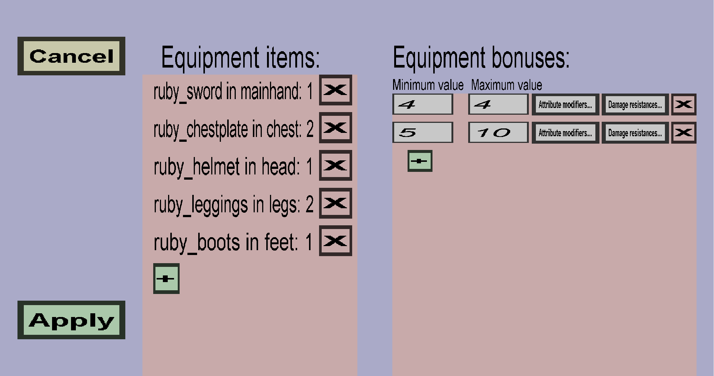

The equipment set edit menu can be used to edit an equipment set. An equipment set has a collection of Equipment items and Equipment bonuses. An example equipment set is shown below:
The equipment items determine which items are part of the equipment set, in which slot it needs to be put, and how important each of these items is. When an equipment item is in the wrong slot (for instance when a player holds a chestplate in their main hand), the equipment item will not count towards the bonuses. In the example configuration shown in the screenshot above:
The total number of points determines which equipment bonuses players will get. When a player equips ruby leggings and a ruby helmet, and holds a ruby sword in their main hand, there total number of points would be 2 + 1 + 1 = 4.
The Equipment bonuses are the bonuses (or punishments) when a player equips the right equipment items. Each equipment bonus has:
In the example shown in the screenshot, there are 2 equipment bonuses: the first one is given to players whose total number of points is exactly 4 and the second one is given to players whose total number of points is between 5 and 10. Note that the maximum number of points any player can have is 1 + 2 + 1 + 2 + 1 = 7 (which is smaller than 10), so the second one will be given to any player who has at least 5 points.
The attribute modifiers and the damage resistances can be seen by clicking on the Attribute modifiers... and Damage resistances... buttons. These determine the actual bonuses that will be given to the players.